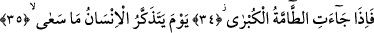
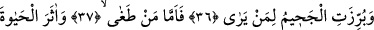
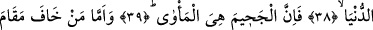
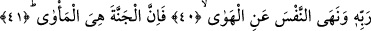

O BÜYÜK FELAKET
GELDİĞİ VAKİT
34. Her şeyi altüst eden o büyük felaket geldiği vakit,
35. İnsanın yapıp ettiklerini hatırlayacağı gün
36. Ve görene Cehennem açık bir şekilde gösterildiği zaman
37. Azan kimseye
38. Ve dünya hayatını âhirete tercih edene,
39. Şüphesiz Cehennem tek barınaktır.
40. Rabbinin makamından korkan ve nefsini kötü arzulardan uzaklaştıran için
41. Şüphesiz Cennet yegane barınaktır.
“Herşeyi altüst eden o büyük felaket geldiği vakit…” Sıhah’ta ifâde edildiğine göre;
çoğalıp üstün ve galip gelen herşeye arapçada “tamme” denilir. “Kübra” ise “ekber”
kelimesinin çoğuludur. Kelime “yaşlandı” anlamına gelen “kebira” kökünden değil,
“büyük oldu” anlamına gelen “kebura” kökündendir.
Buradan itibaren Allah onların dünya hayatındaki hallerini beyânının ardından
âhiretteki durumlarını beyân etmeye başlamaktadır. Âyetin başındaki “fa” harfi,
kendisinden önceki cümlenin ardından sırasıyla kendisinden sonraki cümlenin geldiğini,
bir başka ifâdeyle iki cümle arasında bir tertib bulunduğunu ifâde etmektedir. Nitekim
bu tertibin bulunduğuna “el-meta” kelimesi de işâret etmektedir. Buna göre âyet-i
kerimeye şöyle bir anlam verilebilir: “Kalan diğer belâ ve musîbetlere üstün ve baskın
gelen büyük belânın meydana gelme vakti gelip çattığı zaman...”
Âyette Allah o belâyı “el-kübrâ” yâni en büyük olarak nitelemektedir. Bu niteleme,
anlama tekid/pekiştirme katmak içindir. Eğer bu kelime “bütün yaratıklara üstün ve
baskın gelen belâ” biçiminde tefsir edilecek olursa, o zaman burada belâ tahsis edilmiş
yâni özel kılınmış olur.
Bahsedilen “en büyük belâ”dan maksad, kıyamet veya sura ikinci üfürülüştür. Çünkü
kıyamet günü alışılmışın dışında ve bütün dehşetleri insana unutturacak korkunç
alâmetler müşâhede edilecektir. Sura ikinci kez üfürüldüğünde ise yaratıklar mahşer
yerinde toplanmak üzere diriltileceklerdir.